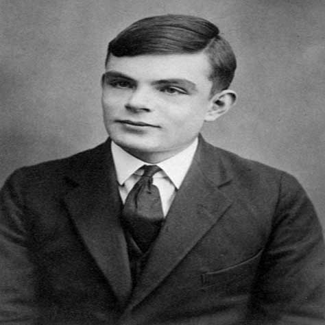

Alan Guth
Quick Facts
Also Known As: Alan Mathison Turing
Famous As:Computer Scientist
Nationality: British
Birthday:June 23, 1912
Died At Age: 41
Sun Sign: Cancer
Born In:Maida Vale
Father:Julius Mathison Turing
Mother: Ethel Sara Stoney
Religion: Atheism
Cause Of DeathSuicide
Discoveries/Inventions: LU Decomposition, Universal Turing Machine
Place Of Death: Wilmslow